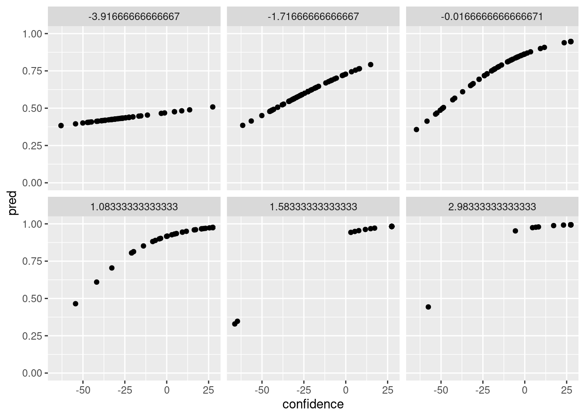
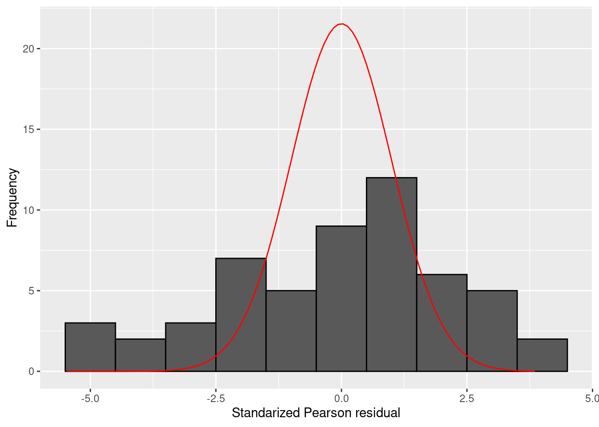

Chapter 10 Generalized linear models
In this chapter, we will first illustrate the main methods of estimation, inference, and model checking with a logistic regression model. We will then go on to describe extensions to other generalized linear (mixed-effects) models. As we will see, most generalized linear models can be estimated with the glm() function, which works similarly to the lm() function, but contains an additional family argument to specify the distribution of the dependent variable and the link function to be used.
After discussing models estimated via the glm() function, we will move on to estimating log-linear models via the loglm() function from the MASS package, multinomial regression models via the multinom() function from the nnet package, and finally generalized linear mixed effects models with the glmer() function from the lme4 package, or the mixed() function from the afex package.
10.1 Model estimation and inference
Most generalized linear models can be estimated with the glm() function. The first argument of this function (formula) should be a formula specifying the predictors of the model. This part is equivalent to how you specify a model formula in the lm() function. So factors will be converted into contrast-coded predictors according to the contrasts() set for those factors. And in the formula, a + is used to include a variable “as is”, whilst separating variables by a * indicates including both main effects and interactions of these variables (see Table 9.1). What is new in the glm() function is the family argument, which is used to define both the random component of the model (i.e. the conditional distribution of the dependent variable) and the link function. For logistic regression, we should specify the family argument as binomial().
The binomial() family uses a logistic link function by default, and a call to binomial() is identical to binomial(link="logit"). The following code estimates a logistic regression model to a subset of the metacognition data:
library(sdamr)
data("metacognition")
# select the subset for participant 1
dat <- subset(metacognition, id == 1)
# center confidence and contrast
dat$confidence <- center(dat$confidence)
dat$contrast <- center(dat$contrast)
# specify the glm model
mod_logistic <- glm(correct ~ confidence * contrast, family=binomial(), data=dat)You can see the parameter estimates and the results of Wald tests (testing for each parameter the null hypothesis that the true value equals 0) through the summary() function:
summary(mod_logistic)##
## Call:
## glm(formula = correct ~ confidence * contrast, family = binomial(),
## data = dat)
##
## Deviance Residuals:
## Min 1Q Median 3Q Max
## -2.7208 0.1124 0.1867 0.5837 1.4906
##
## Coefficients:
## Estimate Std. Error z value Pr(>|z|)
## (Intercept) 1.850776 0.233722 7.919 2.40e-15 ***
## confidence 0.037734 0.007389 5.106 3.28e-07 ***
## contrast 0.503369 0.108244 4.650 3.31e-06 ***
## confidence:contrast 0.008201 0.003249 2.524 0.0116 *
## ---
## Signif. codes: 0 '***' 0.001 '**' 0.01 '*' 0.05 '.' 0.1 ' ' 1
##
## (Dispersion parameter for binomial family taken to be 1)
##
## Null deviance: 397.94 on 377 degrees of freedom
## Residual deviance: 273.66 on 374 degrees of freedom
## AIC: 281.66
##
## Number of Fisher Scoring iterations: 6Results under the header Coefficients: show the parameter estimates \(\hat{\beta}_j\) (Estimate), standard errors \(\text{SE}(\hat{\beta}_j)\) (Std. Error), and Wald tests (z value for the test statistic, and Pr(>|z|) for the \(p\)-value). Above this, under the header Deviance Residuals:, the output also provides a summary of the residual deviances for each observation. These deviances are also available via the residuals() function, by calling e.g. residuals(mod_logistic, type="deviance"). The standardized Pearson residuals can be computed via the same function, calling residuals(mod_logistic, type="pearson"). We will come back to computing residuals later, when discussing Poisson regression.
Likelihood-ratio tests can be obtained via the Anova() function of the car package, setting type=3 to perform model comparisons of the full MODEL G to alternative MODEL R’s which exclude each predictor (i.e. like the Wald test testing the null-hypothesis that the true slope equals 0):
car::Anova(mod_logistic, type=3)## Analysis of Deviance Table (Type III tests)
##
## Response: correct
## LR Chisq Df Pr(>Chisq)
## confidence 29.8242 1 4.731e-08 ***
## contrast 24.0379 1 9.446e-07 ***
## confidence:contrast 6.6468 1 0.009933 **
## ---
## Signif. codes: 0 '***' 0.001 '**' 0.01 '*' 0.05 '.' 0.1 ' ' 1Note that this function does not provide a likelihood-ratio test of the intercept. If you really want this test as well, you can obtain this by estimating a model without an intercept, and then using the anova() function to compare this model to the model with an intercept. To estimate a model without an intercept, you need to add -1 in the model formula:
mod_logistic_0 <- glm(correct ~ -1 + confidence * contrast, family=binomial(), data=dat) To get a likelihood-ratio test comparing this model to the previous one, you to use the anova() function with the argument test = "LRT":
anova(mod_logistic_0, mod_logistic, test="LRT")## Analysis of Deviance Table
##
## Model 1: correct ~ -1 + confidence * contrast
## Model 2: correct ~ confidence * contrast
## Resid. Df Resid. Dev Df Deviance Pr(>Chi)
## 1 375 368.10
## 2 374 273.66 1 94.434 < 2.2e-16 ***
## ---
## Signif. codes: 0 '***' 0.001 '**' 0.01 '*' 0.05 '.' 0.1 ' ' 110.2 Confidence intervals
Profile likelihood confidence intervals for the parameters can be obtained with the confint() function.
confint(mod_logistic)## Waiting for profiling to be done...## 2.5 % 97.5 %
## (Intercept) 1.420750411 2.34632015
## confidence 0.023796104 0.05304488
## contrast 0.298046450 0.72633736
## confidence:contrast 0.001951436 0.01480515By default, this computes 95% confidence intervals. You can change this via the level argument. For example, a 90% confidence interval can be computed as:
confint(mod_logistic, level=.9)## Waiting for profiling to be done...## 5 % 95 %
## (Intercept) 1.48654679 2.26100030
## confidence 0.02597812 0.05045421
## contrast 0.33035069 0.68880772
## confidence:contrast 0.00294661 0.01370484Whilst not recommended as they are less accurate, confidence intervals based on the Normal approximation can also be computed. Wald confidence intervals are defined as \[\hat{\beta}_j \pm z_{1-\tfrac{1}{2} \alpha} \text{SE}(\hat{\beta}_j)\] This can be easily computed from the information available via the summary() function, which provides parameter estimates and standard errors. The summary() function returns a list, which can be stored as a new object in order to use. You can view all the elements in the list by typing e.g. str(summary(mod_logistic)) in the console. The coefficients and standard errors are part of the coefficients element in the list, which contains a matrix with parameter estimates, standard errors, and the results of the Wald tests. The confidence intervals are computed by taking the column of the matrix containing the parameter estimates, and adding and subtracting the column with standard errors, multiplied by the critical \(z\)-value computed via the qnorm() function:
# store coefficients matrix
est <- summary(mod_logistic)$coefficients
# compute the critical Z value (alpha = .05 for 95% confidence interval)
qz <- qnorm(1-(.05)/2)
# compute lower and upper confidence bounds
cbind(est[,1] - qz*est[,2],
est[,1] + qz*est[,2])## [,1] [,2]
## (Intercept) 1.392689995 2.30886155
## confidence 0.023250692 0.05221643
## contrast 0.291214848 0.71552335
## confidence:contrast 0.001833409 0.01456941Compared to the confidence intervals based on the profile likelihood, the Wald confidence are a somewhat wider.
If you are to use a piece of code repeatedly, it is generally a good idea to define it as a function that can be re-used. This is more efficient. It can also avoid errors, as you would only need to correct errors once in the definition of the function, and not everywhere you would otherwise perform the computation. The code below defines a new function zconfint(), which provides a simple alternative to the confint() function using the Wald approximation and a 95% confidence interval by default:
z_confint <- function(mod, level=.95) {
est <- summary(mod)$coefficients
out <- cbind(est[,1] - qnorm(1-(1-level)/2)*est[,2],
est[,1] + qnorm(1-(1-level)/2)*est[,2])
colnames(out) <- c(paste(100*(1-.95)/2,"%"), paste(100 - 100*(1-.95)/2,"%"))
return(out)
}You can now use this function simply as:
z_confint(mod_logistic)## 2.5 % 97.5 %
## (Intercept) 1.392689995 2.30886155
## confidence 0.023250692 0.05221643
## contrast 0.291214848 0.71552335
## confidence:contrast 0.001833409 0.01456941and compute a 90% confidence interval by explicitly setting the level argument:
z_confint(mod_logistic, level=.9)## 2.5 % 97.5 %
## (Intercept) 1.466338069 2.23521347
## confidence 0.025579154 0.04988797
## contrast 0.325323639 0.68141456
## confidence:contrast 0.002857215 0.01354560The above is mainly meant for didactic purposes. The profile-likelihood confidence intervals computed with the confint() function are generally preferred over the Wald approximation implemented via this new z_confint() function.
10.3 Model predictions
The predict() function can be used to extract the model predictions. Model predictions can be obtained on the scale of the link function (type="link", the default), but also on the scale of the response (type="response"). The former are just the values of the linear function of the model, i.e. \[\hat{y}_\text{link} = \hat{\beta}_0 + \sum_{j=1}^m \hat{\beta}_j \times X_{j,i}\]
The latter are transformations of these predictions via the inverse-link function:
\[\hat{y}_\text{response} = h(\hat{\beta}_0 + \sum_{j=1}^m \hat{\beta}_j \times X_{j,i})\]
We can use the predictions to get a rough overview of the predicted probability of a correct response as a function of the (centered) confidence, for each of the levels of (centered) contrast as follows:
# store model predictions in the data frame
dat$pred <- predict(mod_logistic, type="response")
library(ggplot2)
ggplot(dat,aes(x=confidence,y=pred)) + geom_point() + facet_wrap(~contrast) + ylim(c(0,1))
10.4 Alternative link functions for logistic regression
Other possible link functions for the binomial() family are probit, cauchit, log and cloglog. A model with a Probit link function can be estimated by specifying this link in the binomial() family argument as follows:
mod_probit <- glm(correct ~ confidence * contrast, family=binomial("probit"), data=dat)
summary(mod_probit)##
## Call:
## glm(formula = correct ~ confidence * contrast, family = binomial("probit"),
## data = dat)
##
## Deviance Residuals:
## Min 1Q Median 3Q Max
## -2.77711 0.07343 0.16127 0.61259 1.39558
##
## Coefficients:
## Estimate Std. Error z value Pr(>|z|)
## (Intercept) 1.040633 0.120410 8.642 < 2e-16 ***
## confidence 0.020422 0.004071 5.016 5.26e-07 ***
## contrast 0.280031 0.061099 4.583 4.58e-06 ***
## confidence:contrast 0.004224 0.001871 2.257 0.024 *
## ---
## Signif. codes: 0 '***' 0.001 '**' 0.01 '*' 0.05 '.' 0.1 ' ' 1
##
## (Dispersion parameter for binomial family taken to be 1)
##
## Null deviance: 397.94 on 377 degrees of freedom
## Residual deviance: 272.29 on 374 degrees of freedom
## AIC: 280.29
##
## Number of Fisher Scoring iterations: 7car::Anova(mod_probit, type=3)## Analysis of Deviance Table (Type III tests)
##
## Response: correct
## LR Chisq Df Pr(>Chisq)
## confidence 27.2776 1 1.762e-07 ***
## contrast 23.4433 1 1.286e-06 ***
## confidence:contrast 5.2805 1 0.02157 *
## ---
## Signif. codes: 0 '***' 0.001 '**' 0.01 '*' 0.05 '.' 0.1 ' ' 1The cauchit link function is the Cauchy cumulative probability distribution:
\[g(y) = 0.5 + \frac{\arctan(y)}{\pi}\]
and the cloglog the complementary-log-log link function:
\[g(y) = \log\left(-\log(1 - y)\right)\]
## Poisson regression
A Poisson regression model can be estimated by specifying the family as family=poisson(). The default link is the (canonical) log link function, and hence family=poisson() is the same as family=poisson(link="log"). Other possible link functions are identity (\(g(y) = y\)) and sqrt (\(g(y) = \sqrt{y}\)).
The analysis of the gestures data in the SDAM book can be replicated with the following code, which first sets the contrasts applied to the context, language, and gender factors, and then creates a new variable for the offset in the model (which is the \(\log(\texttt{duration})\), and supplied as the offset argument to thee glm() function:
# load the data
data("gestures")
# set the contrasts
contrasts(gestures$context) <- c(1,-1)
contrasts(gestures$language) <- c(1,-1)
contrasts(gestures$gender) <- c(1,-1)
# create a new variable for the offset
gestures$log_d <- log(gestures$dur)
# estimate the model, including the offset
mod_poisson <- glm(gestures ~ context*language*gender, data=gestures, family=poisson(), offset=log_d)As before, we can obtain the parameter estimates as Wald tests via the summary() function:
summary(mod_poisson)##
## Call:
## glm(formula = gestures ~ context * language * gender, family = poisson(),
## data = gestures, offset = log_d)
##
## Deviance Residuals:
## Min 1Q Median 3Q Max
## -6.5549 -1.7616 0.0867 1.3777 3.5992
##
## Coefficients:
## Estimate Std. Error z value Pr(>|z|)
## (Intercept) -0.96553 0.01982 -48.703 < 2e-16 ***
## context1 0.04595 0.01982 2.318 0.02046 *
## language1 0.02877 0.01982 1.451 0.14677
## gender1 0.06223 0.01982 3.139 0.00169 **
## context1:language1 -0.03608 0.01982 -1.820 0.06877 .
## context1:gender1 -0.02598 0.01982 -1.310 0.19007
## language1:gender1 -0.04170 0.01982 -2.104 0.03542 *
## context1:language1:gender1 0.03724 0.01982 1.878 0.06031 .
## ---
## Signif. codes: 0 '***' 0.001 '**' 0.01 '*' 0.05 '.' 0.1 ' ' 1
##
## (Dispersion parameter for poisson family taken to be 1)
##
## Null deviance: 326.95 on 53 degrees of freedom
## Residual deviance: 303.96 on 46 degrees of freedom
## AIC: 623.09
##
## Number of Fisher Scoring iterations: 4And we can obtain likelihood-ratio tests via car::Anova():
car::Anova(mod_poisson, type=3)## Analysis of Deviance Table (Type III tests)
##
## Response: gestures
## LR Chisq Df Pr(>Chisq)
## context 5.3915 1 0.020235 *
## language 2.1118 1 0.146170
## gender 9.8764 1 0.001674 **
## context:language 3.3206 1 0.068416 .
## context:gender 1.7183 1 0.189909
## language:gender 4.4396 1 0.035115 *
## context:language:gender 3.5325 1 0.060178 .
## ---
## Signif. codes: 0 '***' 0.001 '**' 0.01 '*' 0.05 '.' 0.1 ' ' 1The output of the summary() function includes a summary of the residual deviances. These residuals seem relatively large, but standardized Pearson residuals have a more straightforward interpretation. We can get a similar summary of the standardized Pearson residuals by calling the summary() function on the output of residuals(type="pearson"):
summary(residuals(mod_poisson, type="pearson"))## Min. 1st Qu. Median Mean 3rd Qu. Max.
## -5.46630 -1.67602 0.08694 -0.04635 1.41827 3.85069Under the null-hypothesis that the model fits the data well, the standardized Pearson residuals follow a standard Normal distribution. That implies that absolute values larger than 3 should be very unlikely. Inh this model, such unlikely residuals are often present.
It is useful to plot a hisogram of the standardized Pearson residuals for generalized linear models. The following code provides a histogram and overlays a standard Normal distribution (which is the distribution of the standardized Pearson residuals under the null-hypothesis that the model in question is equal to the true model, in the sense that the probability distribution over the dependent variable equals the actual distribution of the dependent variable). A histogram depicts counts on the \(y\)-axis, but a density function such as the standard Normal density function depicts a probability distribution. These have different scales: the area under the curve of a probability density is equal 1, whilst the area covered by a histogram is equal to \(n \times w\), where \(n\) is the number of observations and \(w\) the width of the bins in the hisotgram. To make these commensurable, we therefore need to rescale the standard Normal density function to the scale of the hisogram. In the code below, this rescaling is done via the bw (\(w\)) and n_obs (\(n\)) arguments, computed first and then used to rescale the output of the dnorm function (which provides the values of the Normal density function). The result is then provided as the fun argument to the stat_function() function of the ggplot2 package:
library(ggplot2)
bw <- 1 # binwidth
n_obs <- length(residuals(mod_poisson, type="pearson")) # number of observations
tdat <- data.frame(residual = residuals(mod_poisson, type="pearson"))
ggplot(tdat, aes(x=residual)) + geom_histogram(binwidth=bw, colour="black") + stat_function(fun=function(x) dnorm(x) * bw * n_obs, colour="red") + xlab("Standarized Pearson residual") + ylab("Frequency")
You can compute the proportion of observations with an absolute standardized Pearson residual larger than 3 as follows:
sum(abs(residuals(mod_poisson, type="pearson")) > 3)/length(residuals(mod_poisson, type="pearson"))## [1] 0.2222222This shows that more than 20% of the observations have rather extreme Pearson residuals.
10.5 Quasi-Poisson regression
Quasi-Poisson regression models can be estimated by setting the family argument to quasipoisson. As for the poisson() family, the default link function is the log link.
mod_qpoisson <- glm(gestures ~ context*language*gender, data=gestures, family=quasipoisson(), offset=log_d)
summary(mod_qpoisson)##
## Call:
## glm(formula = gestures ~ context * language * gender, family = quasipoisson(),
## data = gestures, offset = log_d)
##
## Deviance Residuals:
## Min 1Q Median 3Q Max
## -6.5549 -1.7616 0.0867 1.3777 3.5992
##
## Coefficients:
## Estimate Std. Error t value Pr(>|t|)
## (Intercept) -0.96553 0.04821 -20.028 <2e-16 ***
## context1 0.04595 0.04821 0.953 0.346
## language1 0.02877 0.04821 0.597 0.554
## gender1 0.06223 0.04821 1.291 0.203
## context1:language1 -0.03608 0.04821 -0.748 0.458
## context1:gender1 -0.02598 0.04821 -0.539 0.593
## language1:gender1 -0.04170 0.04821 -0.865 0.392
## context1:language1:gender1 0.03724 0.04821 0.772 0.444
## ---
## Signif. codes: 0 '***' 0.001 '**' 0.01 '*' 0.05 '.' 0.1 ' ' 1
##
## (Dispersion parameter for quasipoisson family taken to be 5.913283)
##
## Null deviance: 326.95 on 53 degrees of freedom
## Residual deviance: 303.96 on 46 degrees of freedom
## AIC: NA
##
## Number of Fisher Scoring iterations: 4The \(F\)-tests of this model can be obtained via the car::Anova() function, by setting the argument test.statistic="F", as well as error.estimate = "dispersion" (the latter to indicate that the error variance is estimated from the estimated dispersion parameter of the quasi-Poisson model):
car::Anova(mod_qpoisson, type=3, test.statistic="F", error.estimate="dispersion")## Analysis of Deviance Table (Type III tests)
##
## Response: gestures
## Error estimate based on estimated dispersion
##
## Sum Sq Df F values Pr(>F)
## context 5.392 1 0.9118 0.3446
## language 2.112 1 0.3571 0.5530
## gender 9.876 1 1.6702 0.2027
## context:language 3.321 1 0.5616 0.4574
## context:gender 1.718 1 0.2906 0.5924
## language:gender 4.440 1 0.7508 0.3907
## context:language:gender 3.532 1 0.5974 0.4435
## Residuals 272.011 46Note that the use of an \(F\)-test here is recommended by Dunn and Smyth (2018) because of the estimation of the dispersion parameter. You would not use this test for most generalized linear models, where the dispersion is taken as fixed.
10.6 Log-linear models
Log-linear models can be estimated with the loglm() function from the MASS package. We will illustrate the use of this function with the rock-paper-scissors example discussed in the SDAM book.
# load the rock-paper-scissors data
data("rps")
head(rps)## id ai_strategy round human_action ai_action score
## 1 1 Level2 1 rock rock 0
## 2 1 Level2 2 rock scissors 1
## 3 1 Level2 3 rock paper -1
## 4 1 Level2 4 paper rock 1
## 5 1 Level2 5 scissors scissors 0
## 6 1 Level2 6 paper paper 0To analyse this data, we first create new variables for the previous human and previous AI actions. For this, we use the lag() function from the dlyr package. This function shifts values in a vector, by default by one element. So if you have a vector c(1,2,3), the result of lag(c(1,2,3)) = c(NA,1,2) (all elements are shifted right, and the first element is set to a missing value NA).
dat <- rps
# create lagged variables
dat$previous_human <- dplyr::lag(dat$human_action)
dat$previous_ai <- dplyr::lag(dat$ai_action)
# set the value in the first round to NA for all participants
dat$previous_human[dat$round == 1] <- NA
dat$previous_ai[dat$round == 1] <- NA
# select a subset of the data with only the last half of each game
# and only the "level 1" AI opponent
dat <- subset(dat, round > 25 & ai_strategy == "Level1")We can now use the table() function to create a cross-tabulation of the three variables of interest
tab <- table(dat[,c("previous_human", "previous_ai","human_action")])
tab## , , human_action = paper
##
## previous_ai
## previous_human paper rock scissors
## paper 12 2 7
## rock 9 19 40
## scissors 94 8 11
##
## , , human_action = rock
##
## previous_ai
## previous_human paper rock scissors
## paper 45 94 17
## rock 5 10 5
## scissors 24 5 15
##
## , , human_action = scissors
##
## previous_ai
## previous_human paper rock scissors
## paper 11 10 8
## rock 12 15 107
## scissors 5 5 5The loglm() function is used to estimate log-linear models, using a formula interface similar to glm() and lm(). When the supplied data is a cross-tabulation as above, the formula can contain numbers which refer to the numbers of the dimensions of the table. So, for the cross-tabulation above, 1 would refer to previous_human, 2 to previous_ai, and 3 to human_action. Independence is specified by separating the dimensions with a + sign, whilst dependence is specified by linking the dimensions with a * sign. For example, a model in which all dimensions are independent is specified as:
mod_1_2_3 <- MASS::loglm(~ 1 + 2 + 3, data=tab)and a model in which all dimensions are dependent as:
mod_123 <- MASS::loglm(~ 1*2*3, data=tab)This last model is the saturated model, and fits the data perfectly:
mod_123## Call:
## MASS::loglm(formula = ~1 * 2 * 3, data = tab)
##
## Statistics:
## X^2 df P(> X^2)
## Likelihood Ratio 0 0 1
## Pearson 0 0 1The independence model is the simplest model, and does not fit the data well:
mod_1_2_3## Call:
## MASS::loglm(formula = ~1 + 2 + 3, data = tab)
##
## Statistics:
## X^2 df P(> X^2)
## Likelihood Ratio 678.4482 20 0
## Pearson 986.9995 20 0Note that two test statistics are provided. The value under Likelihood Ratio is the \(-2 \log \text{likelihood}\) of the model compared to the saturated model. The value under Pearson contains the value of the Pearson goodness-of-fit test:
\[X^2 = \sum_{j=1}^k \frac{(O_j - E_j)^2}{E_j}\]
where \(O_j\) is the observed count for cell \(j\) in the multiway contingency table, and \(E_j\) the expected count computed according to the estimated model. As we have not discussed this test in the SDAM book, we will ignore it for now and focus on the likelihood ratio tests.
The remaining other possible models are specified as follows:
# human action independent from previous human and previous AI
mod_12_3 <- MASS::loglm(~ 1*2 + 3, data=tab)
# previous AI independent from previous human and current human action
mod_13_2 <- MASS::loglm(~ 1*3 + 2, data=tab)
# previous human action independent from previous AI and current human action
mod_23_1 <- MASS::loglm(~ 2*3 + 1, data=tab)
mod_12_23 <- MASS::loglm(~ 1*2 + 2*3, data=tab)
mod_12_13 <- MASS::loglm(~ 1*2 + 1*3, data=tab)
mod_13_23 <- MASS::loglm(~ 1*3 + 2*3, data=tab)
mod_12_13_23 <- MASS::loglm(~ 1*2 + 1*3 + 2*3, data=tab)By inspecting these objects, you will see that the likelihood-ratio test is significant for all of these models. Hence, the null-hypothesis that each of these models is equal to the true model is rejected.
10.7 Multinomial regression
Multinomial logistic regression models can be estimated via the multinom() function of the nnet package. The function uses the usual formula interface. But there is no family() argument here. This function will always use multinomial logistic regression with a baseline logit formulation. Continuing with our example of the rock-paper-scissors data, we can estimate the multinomial logistic regression model as follows:
# turn variables into factors
dat$previous_ai <- factor(dat$previous_ai)
dat$previous_human <- factor(dat$previous_human)
dat$human_action <- factor(dat$human_action)
# set effect-coding contrasts
contrasts(dat$previous_ai) <- contrasts(dat$previous_human) <- cbind(c(-1,1,0),c(-1,0,1))
mod_multinomial <- nnet::multinom(human_action ~ previous_human + previous_ai, data=dat)## # weights: 18 (10 variable)
## initial value 659.167373
## iter 10 value 470.043639
## final value 465.766168
## convergedAnd we can obtain the results as usual via the summary() function:
summary(mod_multinomial)## Call:
## nnet::multinom(formula = human_action ~ previous_human + previous_ai,
## data = dat)
##
## Coefficients:
## (Intercept) previous_human1 previous_human2 previous_ai1 previous_ai2
## rock 0.03037873 -1.3502186 -0.5966141 0.75578735 -0.1067017
## scissors -0.32841978 0.6223544 -1.4315078 -0.05389995 0.7076566
##
## Std. Errors:
## (Intercept) previous_human1 previous_human2 previous_ai1 previous_ai2
## rock 0.1356216 0.2172106 0.1796017 0.1927292 0.1940639
## scissors 0.1505282 0.1874375 0.2240852 0.2043583 0.1727103
##
## Residual Deviance: 931.5323
## AIC: 951.5323Note that there are separate rows for the logit comparing rock to the baseline paper, and the logit comparing scissors to the baseline paper. Whilst the function returns parameter estimates and standard errors, we do not get the usual Wald tests. These can be easily computed though, as the \(z\)-statistic for the Walk test is simply \[z = \frac{\hat{\beta}}{\text{SE}{\hat{\beta}}}\]
The summary() function for multinom models returns a list. The elements of this list that we need are named coefficients and standard.errors:
est <- summary(mod_multinomial)$coefficients
se <- summary(mod_multinomial)$standard.errors
z <- est/se
z## (Intercept) previous_human1 previous_human2 previous_ai1 previous_ai2
## rock 0.2239963 -6.216173 -3.321874 3.9214994 -0.5498278
## scissors -2.1817818 3.320329 -6.388230 -0.2637522 4.0973625The corresponding \(p\)-values can be computed with the pnorm() function, which computes cumulative probabilities of the standard Normal distribution. For this, we take the absolute values of the \(z\)-statistic, and then compute the probability of obtaining a value larger than this as 1 - pnorm(abs(z)) (by default, the pnorm() function returns the probability of a value lower than its argument). Finally, for a two-sided test, we need to multiply this by 2:
2*(1-pnorm(abs(z)))## (Intercept) previous_human1 previous_human2 previous_ai1 previous_ai2
## rock 0.82276015 5.094278e-10 8.941497e-04 8.799968e-05 5.824375e-01
## scissors 0.02912564 8.991128e-04 1.678169e-10 7.919709e-01 4.178842e-05Granted, whilst certainly doable, this procedure is not exactly straightforward. It is more convenient to compute likelihood-ratio tests, which are available via the car::Anova() function:
car::Anova(mod_multinomial, type=3)## Analysis of Deviance Table (Type III tests)
##
## Response: human_action
## LR Chisq Df Pr(>Chisq)
## previous_human 210.124 4 < 2.2e-16 ***
## previous_ai 45.408 4 3.27e-09 ***
## ---
## Signif. codes: 0 '***' 0.001 '**' 0.01 '*' 0.05 '.' 0.1 ' ' 1Note that this provides a single test for each factor, taking the effect of each contrast code for this predictor in each baseline category logit together.
If you want to use a different baseline category than the default (which is the first level of the dependent variable), you can change the baseline category via the ref argument of the relevel() function:
dat$human_action <- relevel(dat$human_action, ref = "rock")
mod_multinomial2 <- nnet::multinom(human_action ~ previous_human + previous_ai, data=dat)## # weights: 18 (10 variable)
## initial value 659.167373
## iter 10 value 468.234594
## final value 465.766168
## convergedsummary(mod_multinomial2)## Call:
## nnet::multinom(formula = human_action ~ previous_human + previous_ai,
## data = dat)
##
## Coefficients:
## (Intercept) previous_human1 previous_human2 previous_ai1 previous_ai2
## paper -0.03035337 1.350194 0.5966090 -0.7557765 0.1066863
## scissors -0.35881414 1.972567 -0.8347918 -0.8096717 0.8143598
##
## Std. Errors:
## (Intercept) previous_human1 previous_human2 previous_ai1 previous_ai2
## paper 0.1356200 0.2172092 0.1796009 0.1927278 0.1940637
## scissors 0.1493363 0.2179507 0.2395315 0.1979328 0.1909146
##
## Residual Deviance: 931.5323
## AIC: 951.532310.8 Generalized linear mixed effects models
The glmer() function of the lme4 package can be used to estimate generalized linear mixed effects models. The interface is similar to the lmer function, with an additional family argument as for glm(). For example, we can fit a mixed-effects logistic regression model for the metacognition model, with random intercepts and slopes for (centered) confidence and contrast for each participant, as follows:
data("metacognition")
dat <- metacognition
dat$confidence <- center(dat$confidence)
dat$contrast <- center(dat$contrast)
mod_mixed_logistic <- lme4::glmer(correct ~ confidence * contrast + (confidence + contrast||id), family=binomial(), data=dat)## Warning in checkConv(attr(opt, "derivs"), opt$par, ctrl = control$checkConv, :
## Model failed to converge with max|grad| = 0.00269636 (tol = 0.002, component 1)## Warning in checkConv(attr(opt, "derivs"), opt$par, ctrl = control$checkConv, : Model is nearly unidentifiable: very large eigenvalue
## - Rescale variables?summary(mod_mixed_logistic)## Generalized linear mixed model fit by maximum likelihood (Laplace
## Approximation) [glmerMod]
## Family: binomial ( logit )
## Formula: correct ~ confidence * contrast + (confidence + contrast || id)
## Data: dat
##
## AIC BIC logLik deviance df.resid
## 5876.5 5925.0 -2931.2 5862.5 7553
##
## Scaled residuals:
## Min 1Q Median 3Q Max
## -28.7441 0.0402 0.1343 0.5330 1.8092
##
## Random effects:
## Groups Name Variance Std.Dev.
## id (Intercept) 2.965e-01 0.544536
## id.1 confidence 1.243e-05 0.003526
## id.2 contrast 2.024e-02 0.142280
## Number of obs: 7560, groups: id, 20
##
## Fixed effects:
## Estimate Std. Error z value Pr(>|z|)
## (Intercept) 1.7230381 0.1340016 12.86 <2e-16 ***
## confidence 0.0294809 0.0016858 17.49 <2e-16 ***
## contrast 0.5332956 0.0402099 13.26 <2e-16 ***
## confidence:contrast 0.0089827 0.0006359 14.12 <2e-16 ***
## ---
## Signif. codes: 0 '***' 0.001 '**' 0.01 '*' 0.05 '.' 0.1 ' ' 1
##
## Correlation of Fixed Effects:
## (Intr) cnfdnc cntrst
## confidence 0.208
## contrast 0.083 0.049
## cnfdnc:cntr 0.043 0.336 0.420
## optimizer (Nelder_Mead) convergence code: 0 (OK)
## Model failed to converge with max|grad| = 0.00269636 (tol = 0.002, component 1)
## Model is nearly unidentifiable: very large eigenvalue
## - Rescale variables?Note the warnings about estimation issues. Estimation issues are more common in generalized linear mixed-effects models than linear mixed-effects models. A hint is provided in the warning as: - Rescale variables?. Estimation of mixed-effects models is generally easier when all predictors have the same scale, with a standard deviation equal to about 1. In this case, scaling the predictors (i.e. \(Z\)-transforming) provides much better results:
dat$confidence <- scale(dat$confidence)
dat$contrast <- scale(dat$contrast)
mod_mixed_logistic <- lme4::glmer(correct ~ confidence * contrast + (confidence + contrast||id), family=binomial(), data=dat)
summary(mod_mixed_logistic)## Generalized linear mixed model fit by maximum likelihood (Laplace
## Approximation) [glmerMod]
## Family: binomial ( logit )
## Formula: correct ~ confidence * contrast + (confidence + contrast || id)
## Data: dat
##
## AIC BIC logLik deviance df.resid
## 5876.5 5925.0 -2931.2 5862.5 7553
##
## Scaled residuals:
## Min 1Q Median 3Q Max
## -28.7442 0.0402 0.1343 0.5330 1.8092
##
## Random effects:
## Groups Name Variance Std.Dev.
## id (Intercept) 0.29652 0.5445
## id.1 confidence 0.01981 0.1408
## id.2 contrast 0.10416 0.3227
## Number of obs: 7560, groups: id, 20
##
## Fixed effects:
## Estimate Std. Error z value Pr(>|z|)
## (Intercept) 1.72304 0.13401 12.86 <2e-16 ***
## confidence 1.17701 0.06730 17.49 <2e-16 ***
## contrast 1.20970 0.09121 13.26 <2e-16 ***
## confidence:contrast 0.81351 0.05759 14.12 <2e-16 ***
## ---
## Signif. codes: 0 '***' 0.001 '**' 0.01 '*' 0.05 '.' 0.1 ' ' 1
##
## Correlation of Fixed Effects:
## (Intr) cnfdnc cntrst
## confidence 0.208
## contrast 0.083 0.049
## cnfdnc:cntr 0.043 0.336 0.420Instead of the glmer() function, you can also use the mixed() function of the afex package. This has the benefit that better tests results can be computed. For generalized linear models, afex::mixed() allows method="LRT" for likelihood-ratio tests, and method="PB" for a parametric bootstrap test.
mod_mixed_logistic2 <- afex::mixed(correct ~ confidence * contrast + (confidence + contrast||id), family=binomial(), data=dat, method="LRT")## Contrasts set to contr.sum for the following variables: idmod_mixed_logistic2## Mixed Model Anova Table (Type 3 tests, LRT-method)
##
## Model: correct ~ confidence * contrast + (confidence + contrast || id)
## Data: dat
## Df full model: 7
## Effect df Chisq p.value
## 1 confidence 1 62.21 *** <.001
## 2 contrast 1 49.46 *** <.001
## 3 confidence:contrast 1 255.32 *** <.001
## ---
## Signif. codes: 0 '***' 0.001 '**' 0.01 '*' 0.05 '+' 0.1 ' ' 1summary(mod_mixed_logistic2)## Generalized linear mixed model fit by maximum likelihood (Laplace
## Approximation) [glmerMod]
## Family: binomial ( logit )
## Formula: correct ~ confidence * contrast + (confidence + contrast || id)
## Data: data
##
## AIC BIC logLik deviance df.resid
## 5876.5 5925.0 -2931.2 5862.5 7553
##
## Scaled residuals:
## Min 1Q Median 3Q Max
## -28.7442 0.0402 0.1343 0.5330 1.8092
##
## Random effects:
## Groups Name Variance Std.Dev.
## id (Intercept) 0.29652 0.5445
## id.1 confidence 0.01981 0.1408
## id.2 contrast 0.10416 0.3227
## Number of obs: 7560, groups: id, 20
##
## Fixed effects:
## Estimate Std. Error z value Pr(>|z|)
## (Intercept) 1.72304 0.13401 12.86 <2e-16 ***
## confidence 1.17701 0.06730 17.49 <2e-16 ***
## contrast 1.20970 0.09121 13.26 <2e-16 ***
## confidence:contrast 0.81351 0.05759 14.12 <2e-16 ***
## ---
## Signif. codes: 0 '***' 0.001 '**' 0.01 '*' 0.05 '.' 0.1 ' ' 1
##
## Correlation of Fixed Effects:
## (Intr) cnfdnc cntrst
## confidence 0.208
## contrast 0.083 0.049
## cnfdnc:cntr 0.043 0.336 0.420